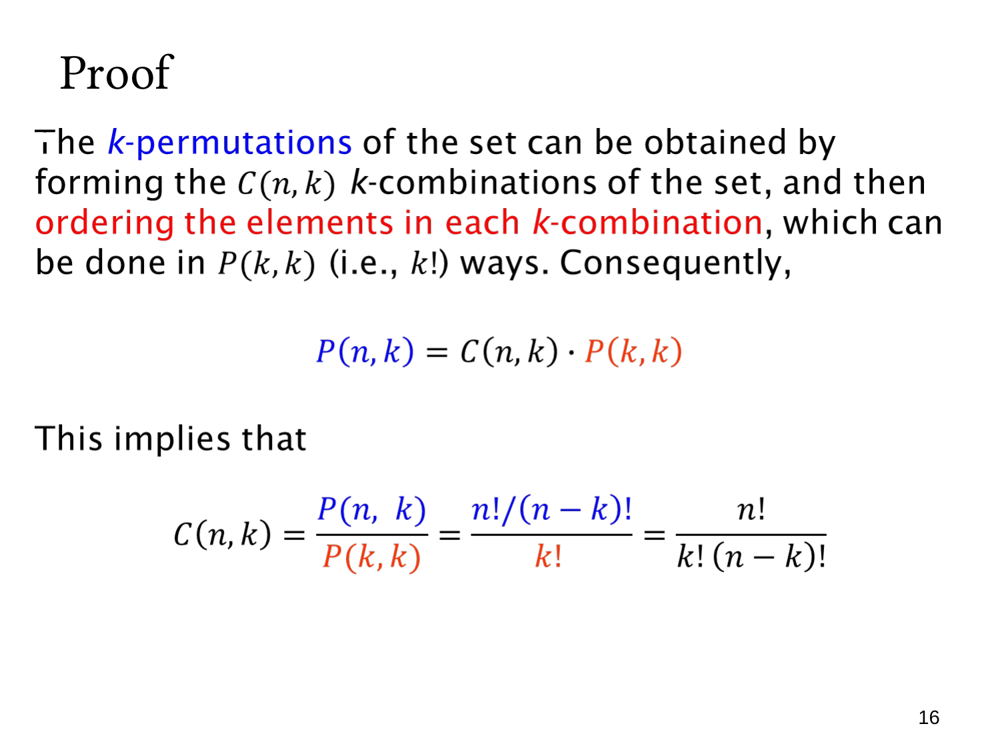

L1.6 · 第 16 页讲解原文
查看这一页课件

组合公式的证明：先选成员，再排次序
本页用两种构造方式计算同一批 k 元排列，从而证明组合数公式。
一种方式是直接按位置选元素，数量为 P(n,k)。另一种方式分两步：
- 先确定有哪些 k 个元素，共 C(n,k) 种子集。
- 再把这 k 个元素排列，共 P(k,k)=k! 种次序。
任意 k 元排列都唯一确定“成员子集”和“子集内的次序”，反过来这两项也唯一构造一个排列。根据乘法法则，
P(n,k)=C(n,k)P(k,k)=C(n,k)k!.
所以
C(n,k)=k!P(n,k)=k!(n−k)!n!.
这里除以 k! 有严格依据：每个组合都恰好对应同样多的 k! 个排列。若不同结果被重复计算的次数不相同，就不能统一除以一个常数。
这也是一种组合证明：先解释计数对象与构造过程，再由数量相等得到公式，而非单纯进行代数运算。